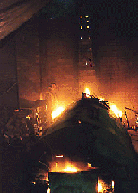

|
Oxidation and Reduction
Firings
 here are many different types of kilns and firing techniques, e.g.
raku, wood firing, gas firing etc. But a particular kiln type can
be suitable for more than one firing type. In general we distinguish
between two types of firing -- oxidation and reduction.
here are many different types of kilns and firing techniques, e.g.
raku, wood firing, gas firing etc. But a particular kiln type can
be suitable for more than one firing type. In general we distinguish
between two types of firing -- oxidation and reduction.
What is an oxidation firing?
In an oxidation firing, ceramic wares are heated to a certain temperature.
The heated ceramics draw oxygen from the kiln chamber and from the
flue burner ports, spy holes and any other holes or cracks in the
kiln. The oxygen combines with carbonaceous materials in the glazes
and ceramic body, turning these into ash. Metal pigments in glazes,
such as iron, will oxidize, giving the glaze a particular color.
Oxidation firings can be done in most kilns, except those which
are not designed for it, e.g. a black firing
kiln, where sugar is introduced into the kiln which volatilizes
and creates carbon, which is trapped in the clay body, creating
a black surface. To do an oxidation firing, leave the burner ports
and any damper open, so enough air exchange can happen in the kiln.
In electric kilns, oxidation is the norm.
What
is a reduction firing?
In a reduction firing, the oxygen supply to the kiln chamber is
restricted, resulting in a saturation of free carbons in the kiln
atmosphere, mostly in the form of carbon dioxide and carbon monoxide.
In a strong reduction firing, flames will lick out of the flue and
through other openings or cracks in the kiln walls. This is because
the flame needs oxygen to burn, so it will try to get it from wherever
it can. The reduction cycle generally begins between 1600o-1900o
F (900o - 1000o C). Typical reduction glazes
are 'copper reds' and 'shinos'.
Next Page> How to
do a Reduction Firing > 2
DIY Fast Firing Kiln Design
Ceramic Firing Techniques
Kilns & Firing
More Articles
|